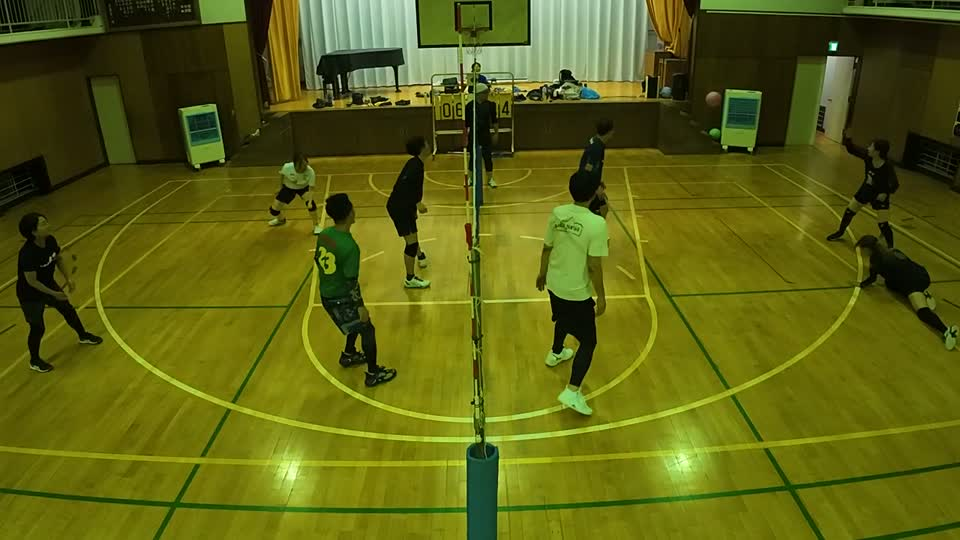
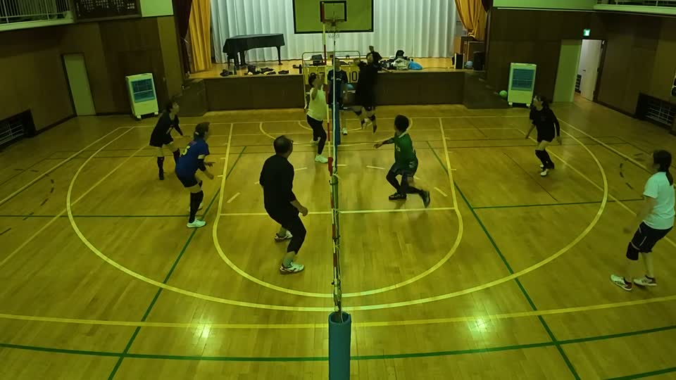
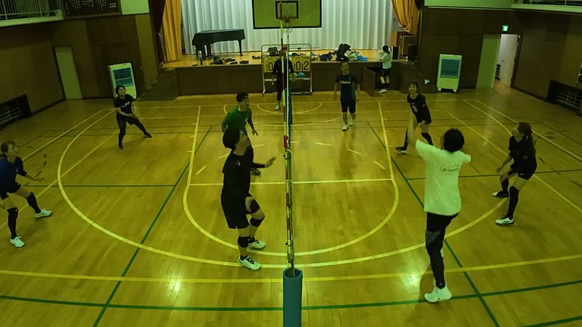
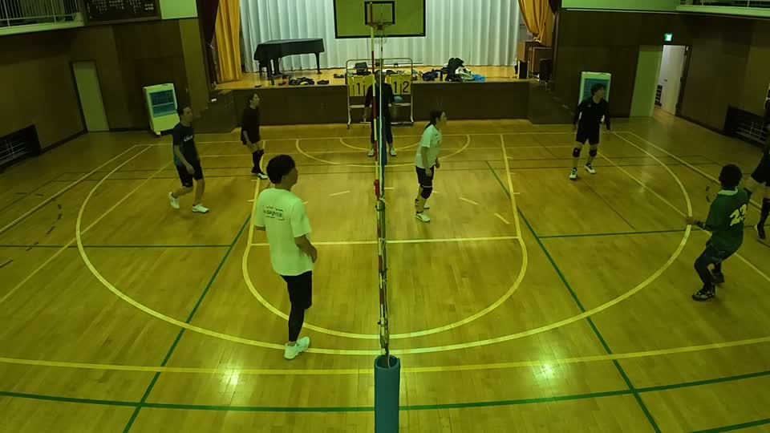
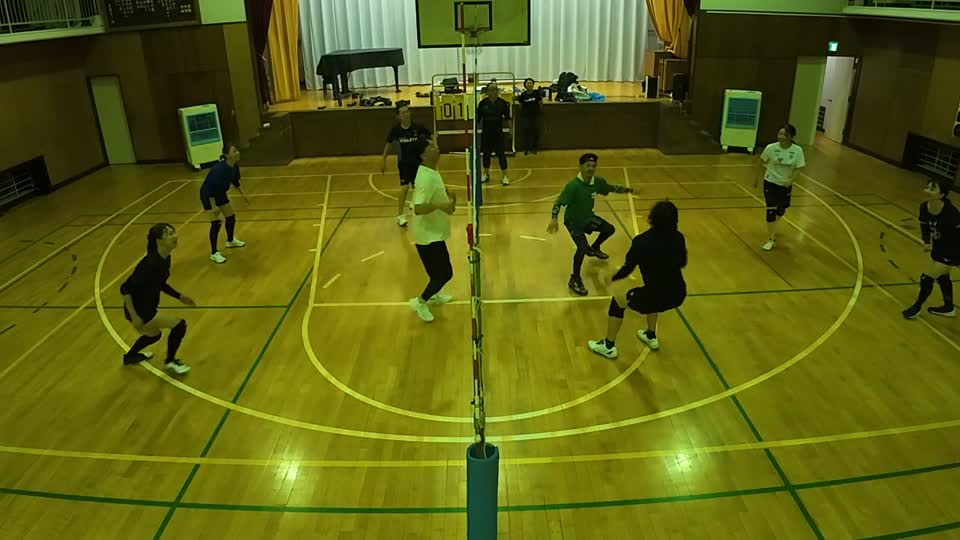
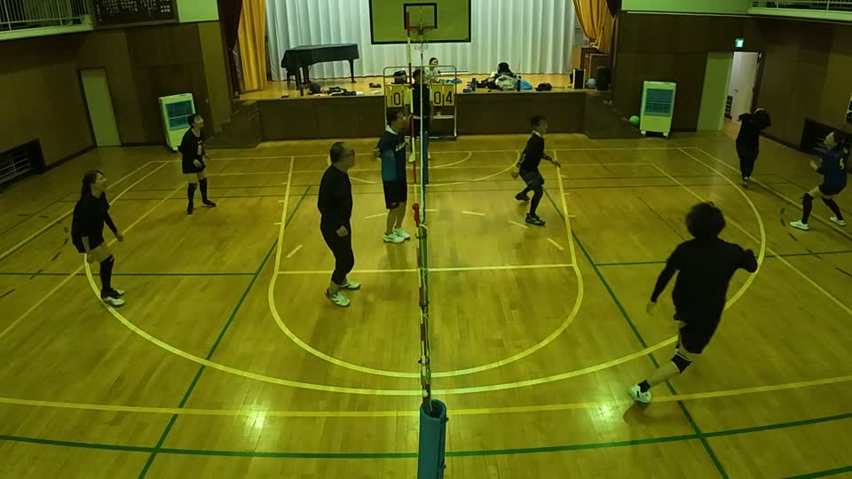

9月19日の都筑の大会まで2週間。この日は25秒を超えるラリーが18本——長いラリーの日でした。写真をタップすると、その場面から動画が再生されます。
ダイジェスト


動画②の05:25。左へ、横っ飛びのダイビングレシーブ。

動画② 05:25そして16:16。けんの強力なアタックを、完璧なレシーブで上げました。それを るき が確実に決めています。失点を防いで、得点を生んだ——この日いちばん価値の高い1本です。

動画② 16:1625:48 にも、もう1本。この日「最高」と評された3本のうち、3本ともあきのレシーブでした。
拾うだけではありません。②11:23・②21:34・③05:03 では、乱れた球を正確なトスに変えて、るきのアタックにつなげています。拾って、上げて、また拾う。この日のコートでいちばん多く、流れを味方に引き戻した人です。
動画②の33:09から26秒のラリー(33:35まで)。決着のあと、るき のサービスエース。息つく間もなく34:01から34秒。この日いちばん長いラリー(34秒)の前に、26秒のラリーとサービスエースが続きました。

動画② 33:09〜（26秒のラリー → るき のサービスエース）誰か一人ではなく、コートにいた全員が拾い続けた2本です。続けて ②34:01 の34秒(この日いちばん長いラリー)もどうぞ。
動画③の07:25。やや乱れた味方のレシーブを、後ろ向きのままダイビングレシーブ。そこから26秒のラリーが続きました。

動画③ 07:25かずえは、この日長いラリーの真ん中に何度もいました。
動画③の01:25。30秒のラリーは、りるの拾いから始まりました。

動画③ 01:25〜（30秒）レシーブ、トス。この日のりるは、決める人ではなく決めさせる人でした。
ゆきよが上げた球は、そのまま味方の得点になりました。2回。
守って終わりではなく、そこから攻撃を作る。失点を防いで得点を生む、いちばん価値の高い形を2回やっています。
動画②の後半、アタックで立て続けに決めました。味方が上げた球を、無駄にしていません。
動画①の23:05。ひとつのラリーのあいだに、2回転んで、2回起き上がりました。

動画① 23:05転んだことより、2回とも、すぐ立ってボールを追い直したところが珍プレーで、好プレーです。①32:26 の31秒のラリーも、ゆりこのレシーブで続きました。
るきは、この日いちばん多く決めました。①31:57（29秒のラリーを終わらせた強打）、②25:00（31秒）、②35:26（26秒）——長いラリーの最後を、るきのアタックが締める形が何度もありました。
やっさんの①06:57、やまさんの①27:03は、奥へ落とす正確なフェイント。けんの①06:22は、強くはないがインナーにスピンをかけた正確なアタックでした。
先週の受賞者は、今回は賞から外れています（同じ人に偏らないための決まりごと）。
10秒を超えると長いラリー、20秒を超えると勝敗に関係なくよいラリー。この日は25秒超が18本、30秒超が6本ありました。前回（8/29）は20秒超が2本でしたから、まるで別のチームのように拾えています。
ほかに ②03:34（29秒）、①31:57（29秒）、②31:19（29秒）、①25:47（28秒）、②11:23（28秒）、②20:08（28秒）など。
サーブミスが2本、オーバーネットが1本。ラリーはよく続いた日なので、課題はその入口と出口だけ。大会では最初の1本が効きます。
9月19日の都筑の大会まで、あと2週間。長いラリーを取り切るところまで、次回を楽しみにしています。
けんぴー(AI)